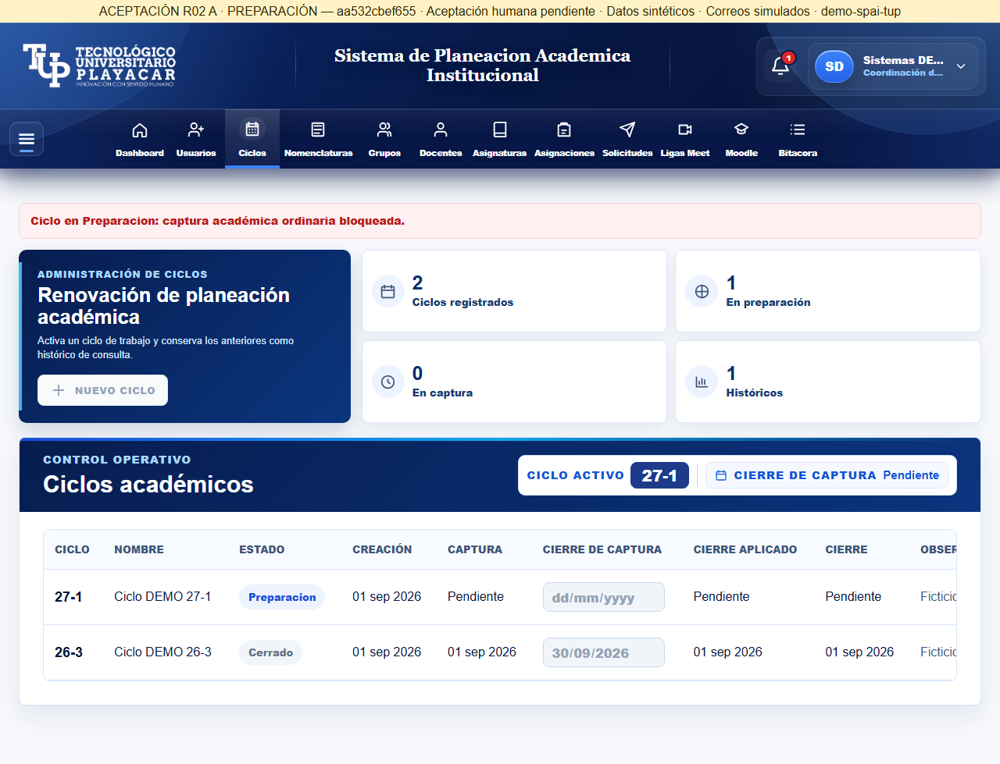
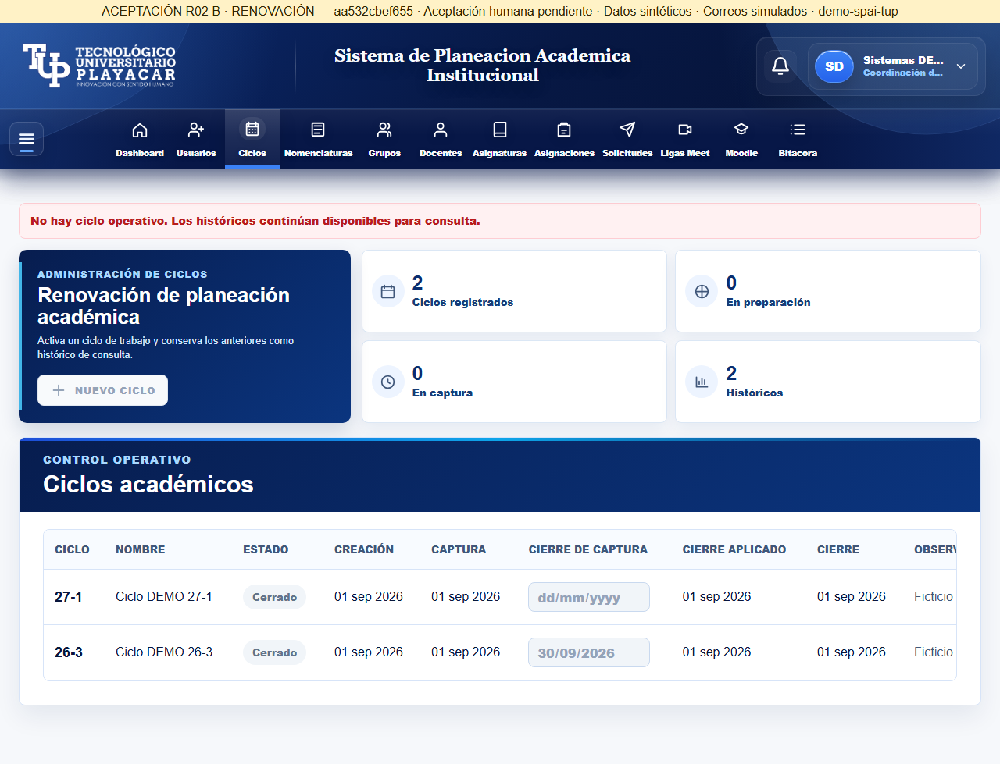
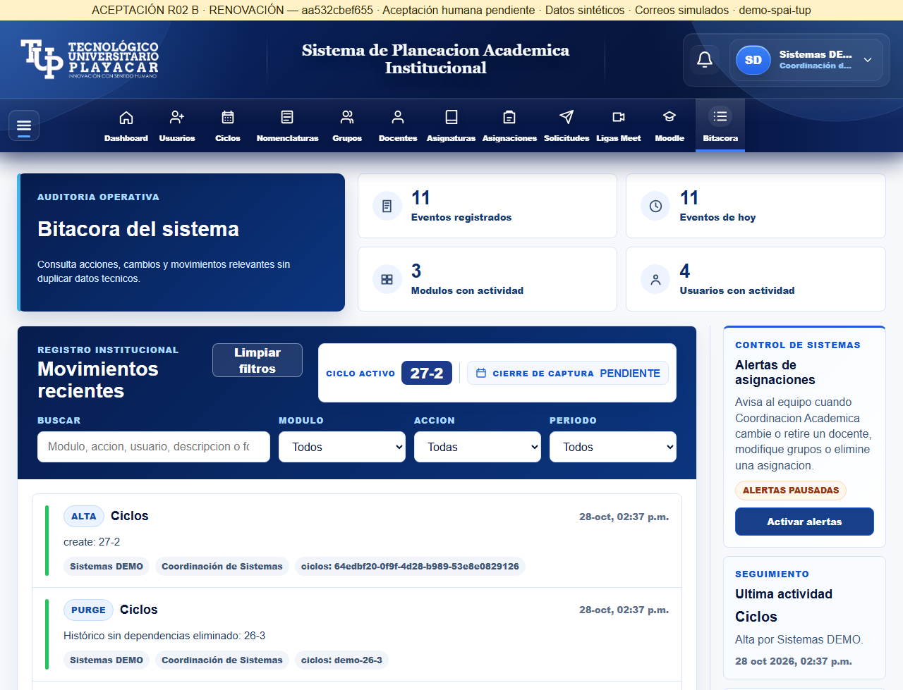

Versión aa532cbef655c9decf7ee0865b82db9f665de5cf. Pruebas desde el anfitrión a través del túnel público; no se atribuyen a otra computadora. Aceptación humana pendiente.
Abrir A · Abrir B · Informe completo · Inventario 25 casos



Los ensayos con escritura terminaron antes de restaurar y congelar las instancias. No ejecutar nuevamente durante la revisión.